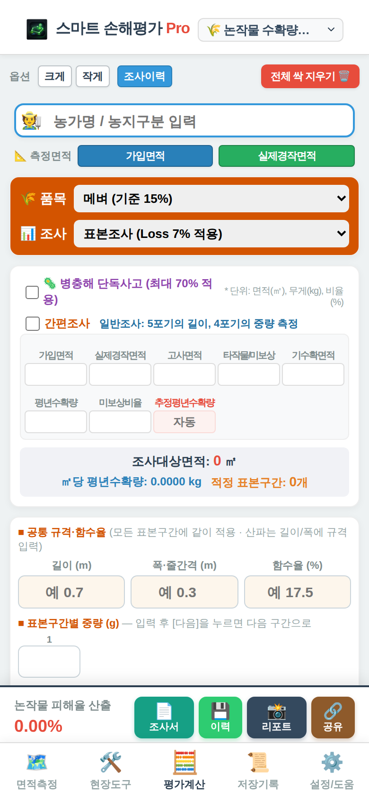

논작물 수확량조사 (벼·밀·보리 등)
조사종류에서 「🌾 논작물 수확량조사」를 고릅니다. 벼, 밀, 보리, 귀리, 분질미에 씁니다.
입력 순서
- 품목과 조사 방법: 위쪽 주황 칸에서 품목(예: 메벼, 기준 함수율 15%)과 조사 방법(예: 표본조사)을 고릅니다. 병충해 단독사고이면 체크합니다(최대 70% 적용).
- 면적과 평년수확량: 가입면적, 실제경작면적, 고사·타작물/미보상·기수확 면적, 평년수확량, 미보상비율을 넣습니다. 면적측정에서 잰 면적은 위쪽 「가입면적」「실제경작면적」 버튼으로 바로 가져올 수 있습니다. 조사대상면적과 적정 표본구간 수는 자동으로 나옵니다.
- 공통 규격·함수율: 모든 표본구간에 같이 쓰는 길이, 폭·줄간격, 함수율을 넣습니다. 칸에 흐리게 보이는 0.7, 0.3, 17.5는 입력 예시입니다.
- 표본구간별 중량(g): 구간마다 무게를 넣고 「다음」을 누르면 다음 구간으로 넘어갑니다.
- 결과 확인: 아래 줄에 피해율이 나옵니다. 피해율과 수확량은 전산처럼 끝자리를 내림합니다.
남는 빈 표본 줄은 자동으로 정리됩니다. 간편조사를 체크하면 간편조사 방식으로 입력합니다.
평년수확량 기준
실제경작면적이 가입면적과 10% 이내로 다르면 계약의 평년수확량을 그대로 씁니다. 10%를 넘으면 면적 비율로 조정합니다. 타작물·미보상·기수확 면적에 쓰는 ㎡당 평년수확량은 「평년수확량 ÷ 가입면적」입니다.
여러 농지를 한 조사서로 (합본 조사서)
- 한 농지를 다 입력했으면 합본 조사서 패널의 「담기」로 농지를 추가합니다.
- 다음 농지를 입력하고 다시 담습니다. 담은 목록은 패널에서 확인·삭제할 수 있습니다.
- 조사서 버튼을 누르면 담은 농지가 한 조사서로 저장됩니다. 12농지가 넘으면 여러 장으로 나뉘어 저장됩니다.
합본 패널은 위쪽 버튼으로 접고 펼 수 있습니다. 처음에는 펼쳐져 있습니다.

화면 사진 자리 (img/calc-rice.png)
논작물 수확량조사 계산기 — 아래 줄에 피해율과 조사서·이력·리포트·공유 버튼